| Petrol pump mp3h0355.jpg | Rama | CC BY-SA 2.0 fr |
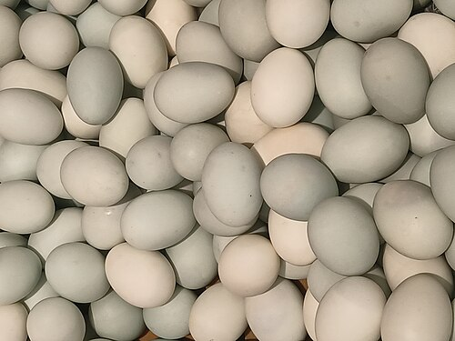 | Salted duck eggs.jpg | Fumikas Sagisavas | CC0 |
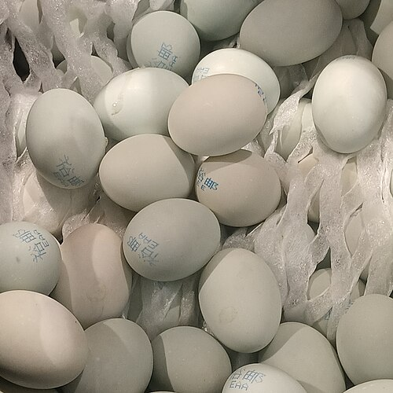 | Gaoyou boiled salted duck eggs.jpg | Fumikas Sagisavas | CC0 |
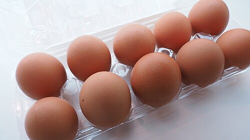 | Eggs 20220410 173644.jpg | Ka23 13 | CC BY-SA 4.0 |
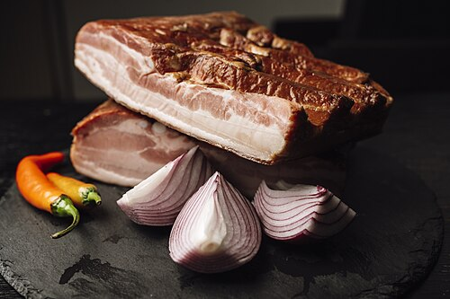 | Freshly prepared raw pork belly with red onions and chili peppers.jpg | Shixart1985 | CC BY 2.0 |
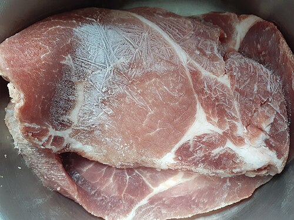 | HK food ingredient red meat frozen pork chop raw butt steak October 2021 SS2 011.jpg | Presixlla MOON | CC BY-SA 4.0 |
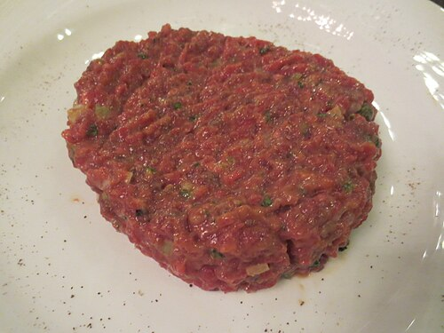 | Steak tartare 002.JPG | Arnaud 25 | CC BY-SA 3.0 |
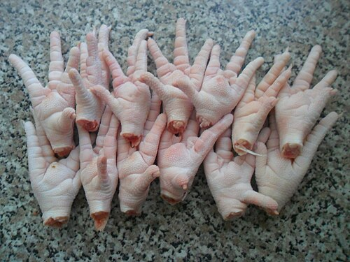 | Processed Frozen Chicken Feet & frozen chicken Paws.jpg | Lukemarie21 | CC BY-SA 4.0 |
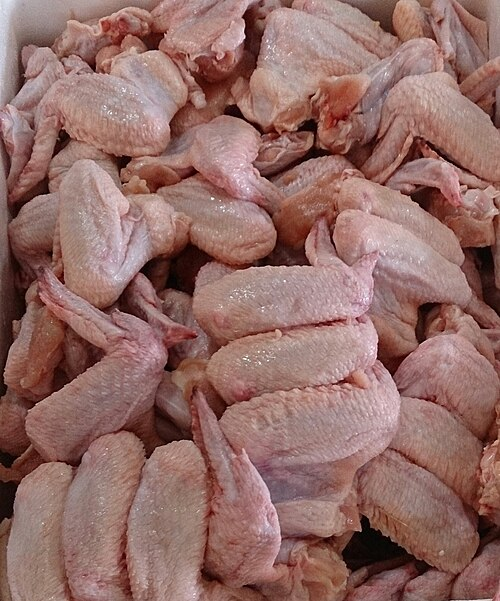 | Raw chicken wings.jpg | ProjectManhattan | CC BY-SA 3.0 |
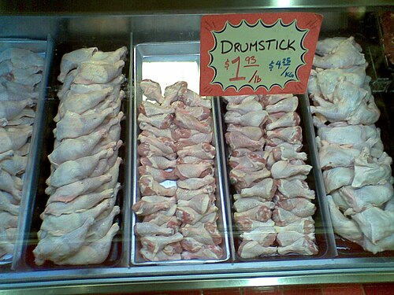 | Raw chicken drumsticks (3312851753).jpg | Geoff Peters from Vancouver, BC, Canada | CC BY 2.0 |
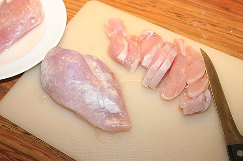 | Kycklingfilé.jpg | Dnor | Public domain |
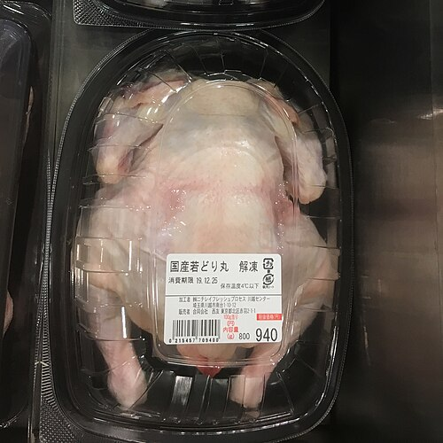 | Whole raw chicken - Japan Dec 22 2019.jpeg | Nesnad | CC BY 4.0 |
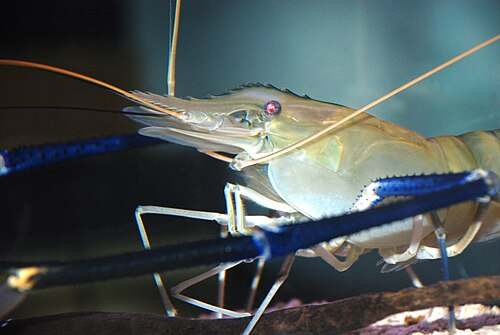 | Washington DC Zoo - Macrobrachium rosenbergii 6.jpg | Jarek Tuszyński | CC BY-SA 3.0 |
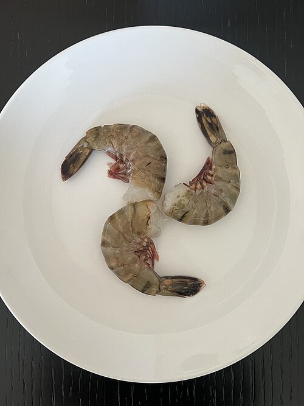 | Liat Portal for Foodie Disorder - Fresh Shrimp.jpg | HaJunkiyada | CC BY-SA 4.0 |
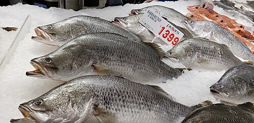 | Barramundi in the Sydney Fish Market.jpg | Oraola | CC BY-SA 4.0 |
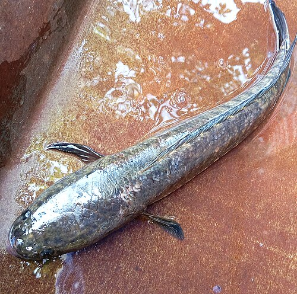 | Snakehead murrel.jpg | Salil Kumar Mukherjee | CC BY-SA 4.0 |
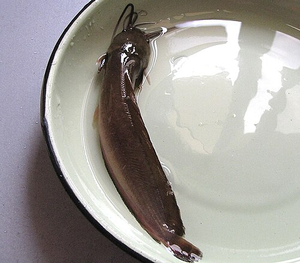 | African catfish - Congo River.jpg | T.K. Naliaka | CC BY-SA 4.0 |
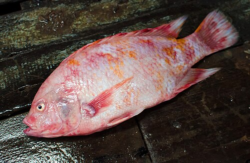 | Pla thapthim.jpg | Takeaway | CC BY-SA 3.0 |
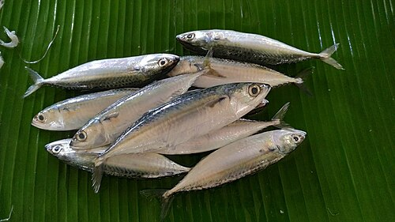 | Jeunara - Rastrelliger kanagurta in Aceh.jpg | Si Gam | CC BY-SA 4.0 |
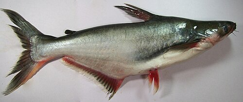 | Pangasianodon hypophthalmus.jpg | Staticd | CC BY-SA 3.0 |
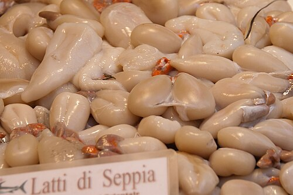 | Cuttlefish eggs at the Rialto fish market (6295247114).jpg | Paul Asman and Jill Lenoble | CC BY 2.0 |
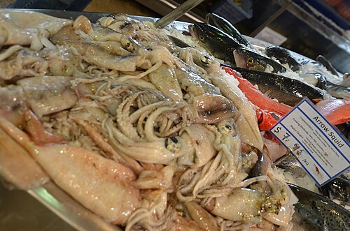 | Arrow Squid -- Auckland Fish Market and Seafood School in New Zealand (50871675792).jpg | Joe Ross from Lansing, Michigan | CC BY-SA 2.0 |
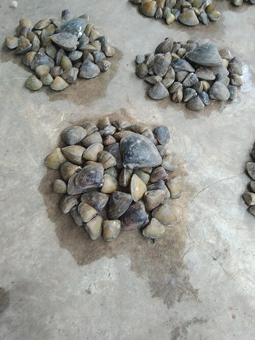 | Clams with shell.jpg | Andikan Efiok Eduok | CC BY-SA 4.0 |
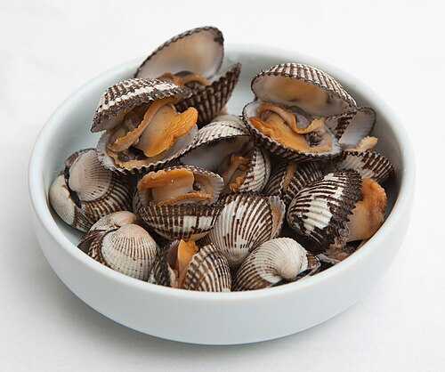 | Kkomak (Tegillarca granosa) 2 (cropped).jpg | 국립국어원 | CC BY-SA 2.0 kr |
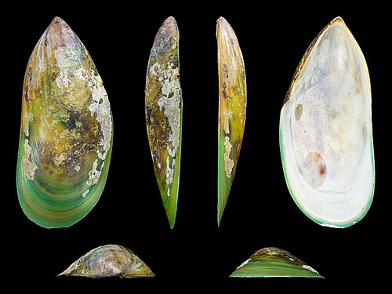 | Perna viridis 01.jpg | H. Zell | CC BY-SA 3.0 |
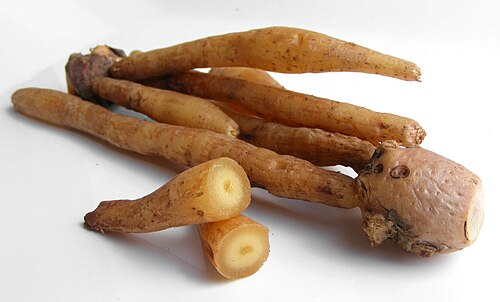 | Boesenbergia rotunda 1.jpg | FotoosVanRobin from Netherlands | CC BY-SA 2.0 |
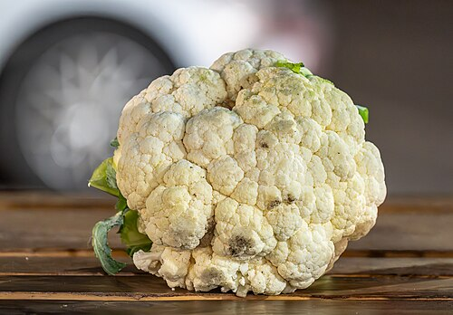 | Brassica oleracea var. botrytis (Coliflor).jpg | Rjcastillo | CC BY-SA 4.0 |
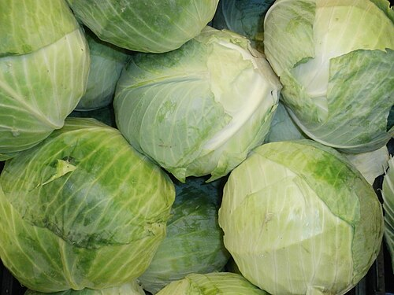 | Cabbage in a stack.jpg | Jeffery Martin | CC0 |
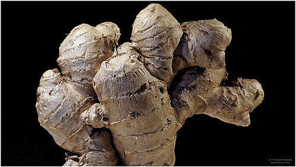 | Ginger Root (179871501).jpeg | Mark Turnauckas | CC BY 3.0 |
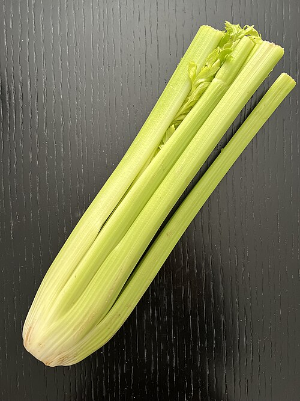 | Liat Portal for Foodie Disorder - Celery from San Francisco Farmers Market.jpg | HaJunkiyada | CC BY-SA 4.0 |
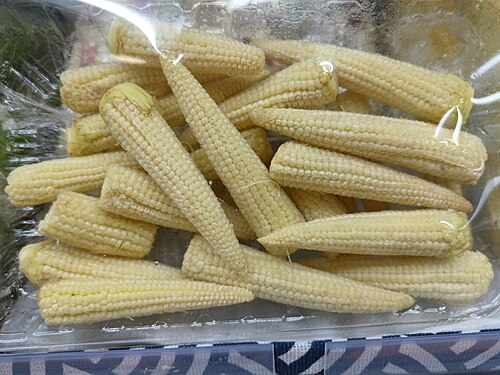 | Baby corn (1).jpg | Fumikas Sagisavas | CC0 |
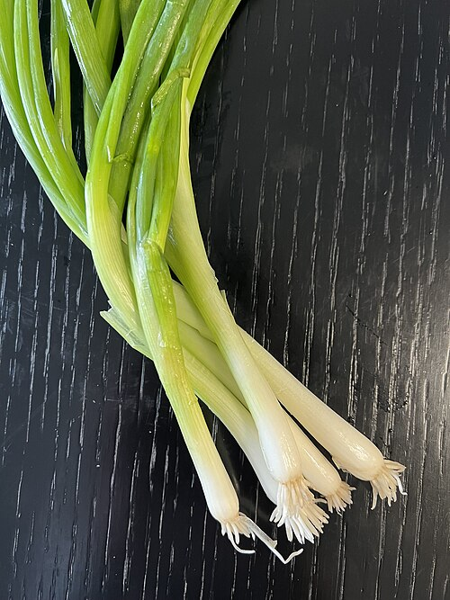 | Liat Portal for Foodie Disorder - Green onion.jpg | HaJunkiyada | CC BY-SA 4.0 |
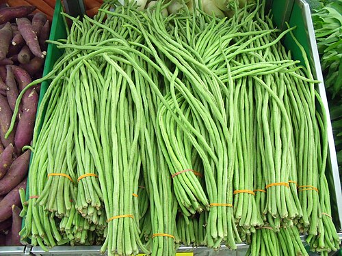 | Long Bean.JPG | David | Public domain |
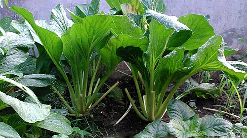 | Sawihijau4 Pj DSC 4884.jpg | Kembangraps | CC BY-SA 4.0 |
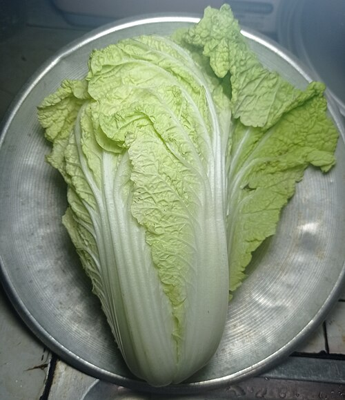 | Napa Cabbage.jpg | SarKaLay စာကလေး | CC BY-SA 4.0 |
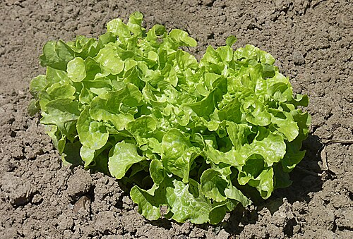 | Green Oak Leaf lettuce J1.jpg | Jamain | CC BY-SA 3.0 |
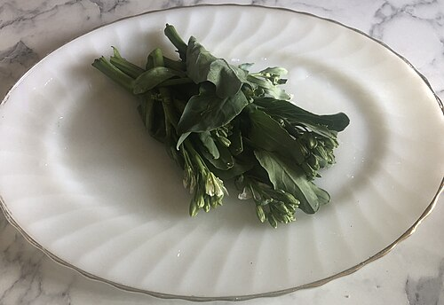 | Gai lan.jpg | Nthaci | CC BY-SA 4.0 |
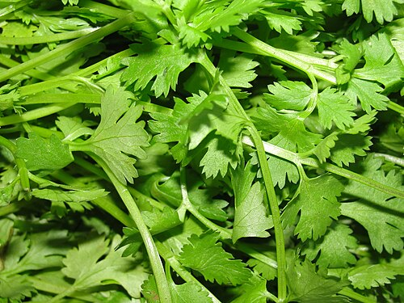 | A scene of Coriander leaves.JPG | Thamizhpparithi Maari | CC BY-SA 3.0 |
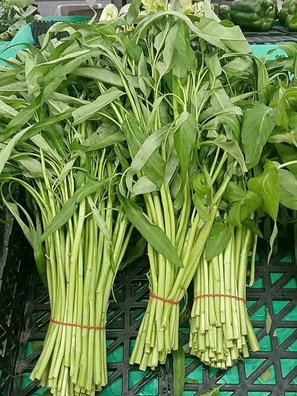 | Water spinach.jpg | Fumikas Sagisavas | CC0 |
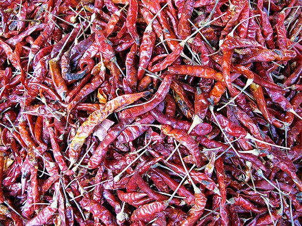 | Old Bagan, Myanmar, Dried red chili (chilli) pepper.jpg | Vyacheslav Argenberg | CC BY 4.0 |
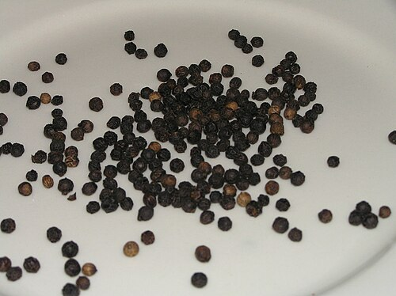 | Black Peppercorns (4422070187).jpg | Ryan Snyder | CC BY 2.0 |
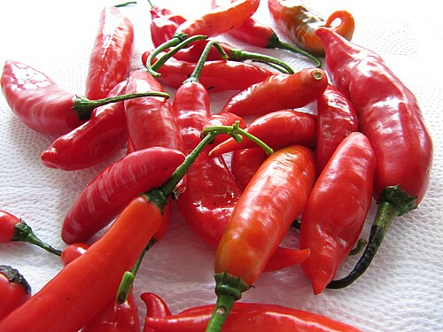 | Red Peppers 2.jpeg | Leoadec | CC BY-SA 3.0 |
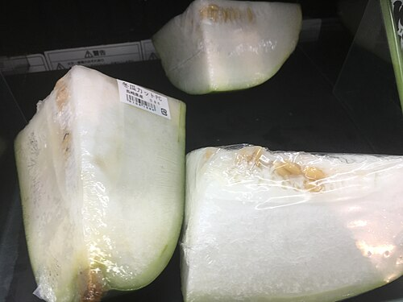 | Cut wax gourd for sale in Tokyo - Sep 15 2020.jpeg | Nesnad | CC BY 4.0 |
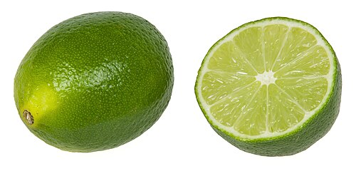 | Lime-Whole-Split.jpg | Evan-Amos | CC0 |
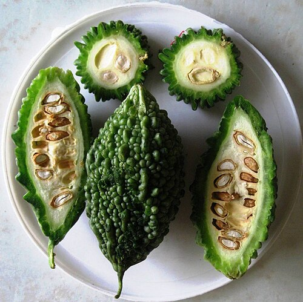 | Bitter gourd (Momordica charantia).jpg | Salil Kumar Mukherjee | CC BY-SA 4.0 |
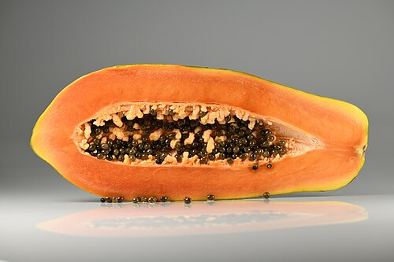 | Papaya - longitudinal section.jpg | Ivar Leidus | CC BY-SA 4.0 |
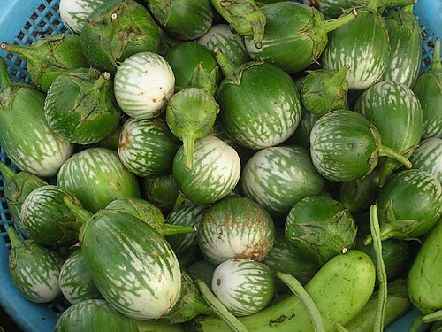 | Thai eggplants.jpg | Pullao | CC BY 2.0 |
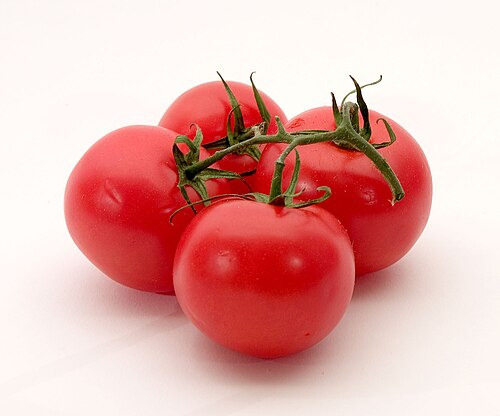 | Tomato je.jpg | Softeis | CC BY-SA 3.0 |
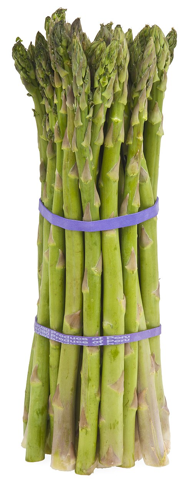 | Asparagus-Bundle.jpg | Evan-Amos | CC BY-SA 3.0 |
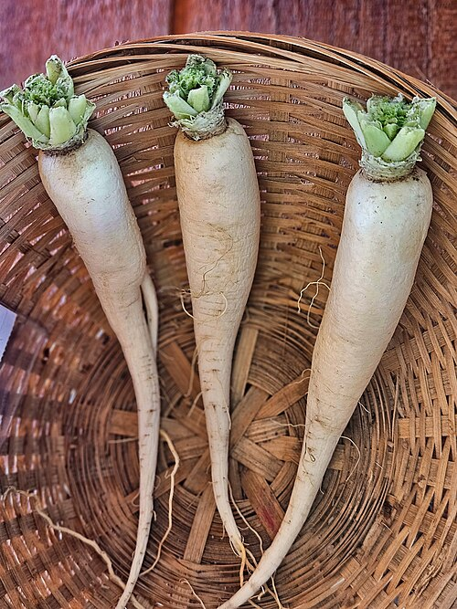 | Daikon radish - Minowase.jpg | Eric Polk | CC BY-SA 4.0 |
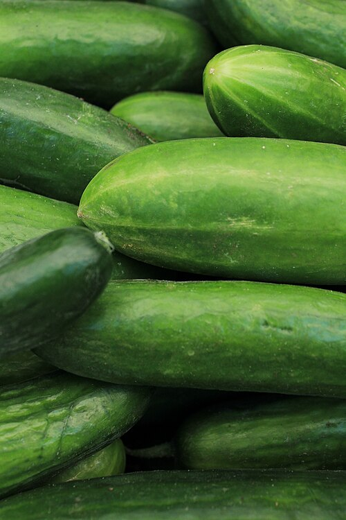 | Ryerson Market cucumbers on sale.jpg | Jason Zhang | CC BY-SA 3.0 |
| DFC 4184 Bunches of ripe bananas neatly arranged at a bustling market stall ready for shoppers.jpg | PattayaPatrol | CC BY-SA 4.0 |
| Durian Fruit in Yunnan.jpg | Rod Waddington | CC BY-SA 2.0 |
| Green Guava.jpg | Maina Tudu | CC0 |
| Fruit in Thailand Mango.jpg | Tris_T7 | CC BY-SA 3.0 |
| Mangosteens - whole and opened.jpg | Ivar Leidus | CC BY-SA 4.0 |
| Buah langsat kalimantan tanpa biji.jpg | Rini Erlina | CC BY-SA 4.0 |
| Dimocarpus longan (2).jpg | Dinkun Chen | CC BY-SA 4.0 |
| Lychee fruits and seed.jpg | Ivar Leidus | CC BY-SA 4.0 |
| Piña (Ananas comosus), Parque Nacional de Lokobe, Nosy Be, Madagascar, 2025-09-21, DD 39.jpg | Diego Delso | CC BY-SA 4.0 |
| Tangerine 2009-03-11.jpg | Kaldari | Public domain |
| Pomelo fruit.jpg | Ivar Leidus | CC BY-SA 4.0 |
| Rambutans with seed.jpg | Ivar Leidus | CC BY-SA 4.0 |
| Taiwan 2009 Tainan City Organic Farm Watermelon FRD 7962.jpg | Fred Hsu (Wikipedia:User:Fred Hsu on en.wikipedia) | CC BY-SA 3.0 |
| Dried herbs 2026-05-24 Philippines 02.jpg | P1898 | CC BY 4.0 |
| Garlic Bulbs (Unsplash).jpg | Matthew Pilachowski matthewpilachowski | CC0 |
| Tamarind pods edible part.jpg | Sonja Pauen - Stanhopea | CC BY 2.0 de |
| Solanum tuberosum 15-p.bot-solana.tuber-01.jpg | Ayotte, Gilles, 1948- | CC BY-SA 4.0 |
| Seeds of Coix lacryma-jobi.jpg | Lionel Allorge | CC BY-SA 3.0 |
| Yellow onions vegetables.jpg | Jon Sullivan | Public domain |
| Shallots-Whole.jpg | Evan-Amos | CC BY-SA 3.0 |
| Sa white sesame seeds.jpg | Sanjay ach | CC BY-SA 3.0 |
| Peanut oil bottle.jpg | Adam Engelhart | CC BY-SA 2.0 |
| Peanuts (Arachis hypogaea) - in shell, shell cracked open, shelled, peeled.jpg | Ivar Leidus | CC BY-SA 4.0 |
| Shredded Coconut Meat, Aug 2026.jpg | Ralff Nestor Nacor | CC BY-SA 4.0 |
| Coconuts - single and cracked open.jpg | Ivar Leidus | CC BY-SA 4.0 |
| 2014 uncooked Thai glutinous rice.jpg | Takeaway | CC BY-SA 4.0 |
| Uncooked ST25 rice on bamboo surface.jpg | VinhNguyen.1257 | CC BY-SA 4.0 |
| รูปถ่ายเป็ดสดทั้งตัว | เจ้าของโปรเจกต์จัดหามา | - |
| ภาพวาดผักกะเฉด | วาดขึ้นเองสำหรับโปรเจกต์นี้ | ใช้ได้อิสระ |